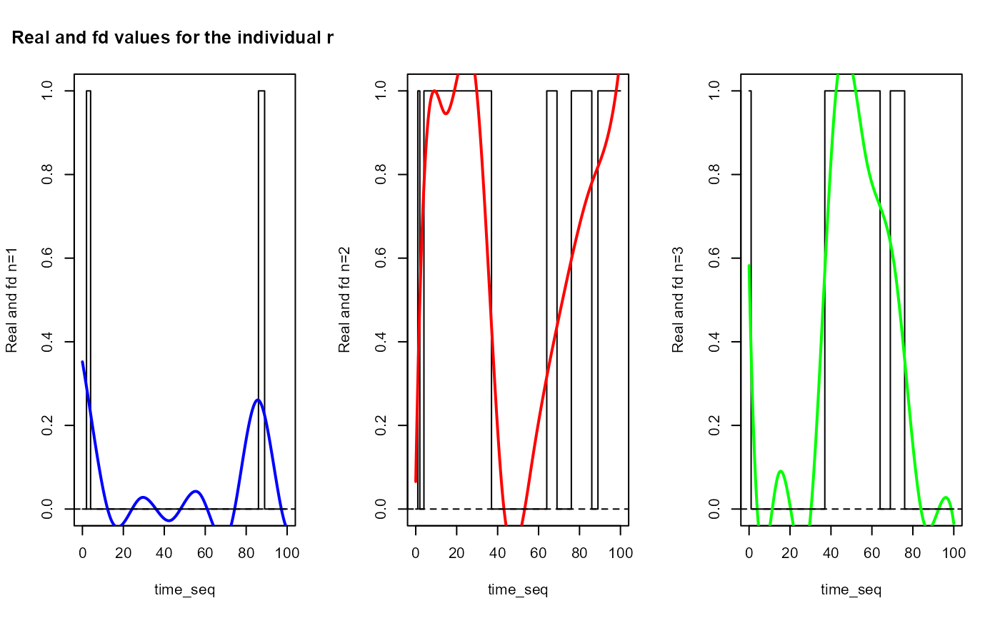

plot_real_and_smoothed_data_ind
Usage
plot_real_and_smoothed_data_ind(
df_wide,
df_fd,
time_seq = 0:100,
id = 1,
col_list = c("blue", "red", "green", "yellow")
)Examples
N_states = 3
lambdas = lambda_determination(N_states)
transition_df = transfer_probabilities(N_states)
df = generate_X_df_multistates(nind = 100, N_states, start=0, end=100,
lambdas, transition_df)
df_processed = cat_data_to_indicator(df)
df_regul = list()
df_wide = list()
for(name in names(df_processed)){
print(paste0(name, " regularisation"))
df_regul[[name]] = regularize_time_series(df_processed[[name]],
time_seq = c(0:100), curve_type = 'cat', id_col='id', time_col='time')
df_wide[[name]] = convert_to_wide_format(df_regul[[name]], id_col='id',
time_col='time')
}
#> [1] "state_1 regularisation"
#> [1] "state_2 regularisation"
#> [1] "state_3 regularisation"
basis = create_bspline_basis(0, 100, 10, 4)
df_fd = list()
for(name in names(df_wide)){
print(paste0(name, " fd transformation"))
df_fd[[name]] = fda::Data2fd(argvals = c(0:100),
y = t(df_wide[[name]][, -c(1)]), basis)
}
#> [1] "state_1 fd transformation"
#> [1] "state_2 fd transformation"
#> [1] "state_3 fd transformation"
plot_real_and_smoothed_data_ind(df_wide, df_fd, c(0:100), id=1)
#> [1] "Real and fd values for the individual n=1"
